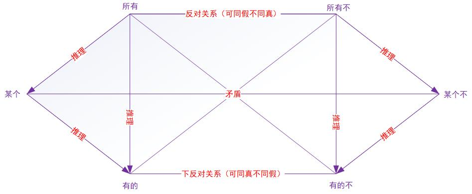
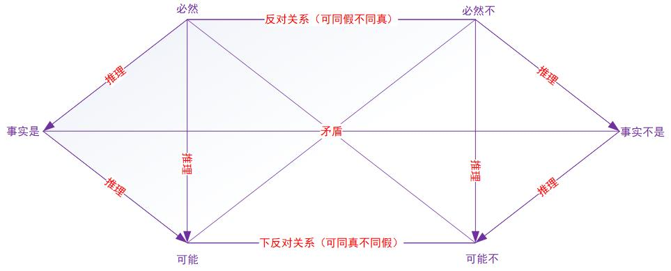

本文简单介绍了管理类综合考研的形式逻辑知识点（简单命题），参考老吕管综合逻辑班。
简单命题包含两类：性质命题和模态命题。其中，性质命题又称直言命题，用来判断事物具有或者不具有某种性质。
1. 性质命题
1.1 性质命题的结构
性质命题是由三部分组成，分别是主语、谓语、量词。
| 序号 | 量词 | 主语 | 谓语 | 名称 |
|---|---|---|---|---|
| 1 | 所有的 | 小姐姐 | 萌萌的 | 全称肯定命题 |
| 2 | 所有的 | 男人 | 不是好东西 | 全称否定命题 |
| 3 | 有的 | 土豪 | 有钱 | 特称肯定命题 |
| 4 | 有的 | 土豪 | 不任性 | 特称否定命题 |
| 5 | 若楠 | 很漂亮 | 单称肯定命题 | |
| 6 | 超越 | 不会跳舞 | 单称否定命题 |
1.2 特殊句式
-
量词的位置
“全称命题”和“特称命题”的量词“所有”和“有的”，应该修饰主语而不是宾语。
例如：
老李喜欢所有颜值高的女生。（单称命题）
所有颜值高的女生，都被老李喜欢。（全称命题）
-
“一个”不一定是一个
一个男孩正在踢球。（单称命题）
一个男孩要经历很多事情，才能成长为男人。（全称命题）
1.3 性质命题的对当关系

- 反对关系：至少一假
- 下反对关系：至少一真
- 矛盾关系：一真一假
- 左右两侧：上真则下真，下假则上假，下真则上不定
- “并非有的”等价于“所有不”
1.4 性质命题的负命题的替换法口诀
- 肯定变否定，否定变肯定
- 所有变有的，有的变所有
【易错点】
- “肯定”和“否定”指的是谓语动词，例如：
- 原命题：并非有的不漂亮的女孩不能找到男朋友。
- 负命题：所有不漂亮的女孩能找到男朋友。
2. 模态命题
2.1 模态命题的数学意义
| 模态命题 | 事件A发生的概率P |
|---|---|
| 事件A必然发生 | P=1 |
| 事件A必然不发生 | P=0 |
| 事件A可能发生 | P∈(0, 1] |
| 事件A可能不发生 | P∈[0, 1) |
【注意】“必然”和“事实”不等价。
2.2 模态命题的对当关系

同性质命题。
2.3 模态命题的负命题的替换法口诀
- 肯定变否定，否定变肯定
- 必然变可能，可能变必然